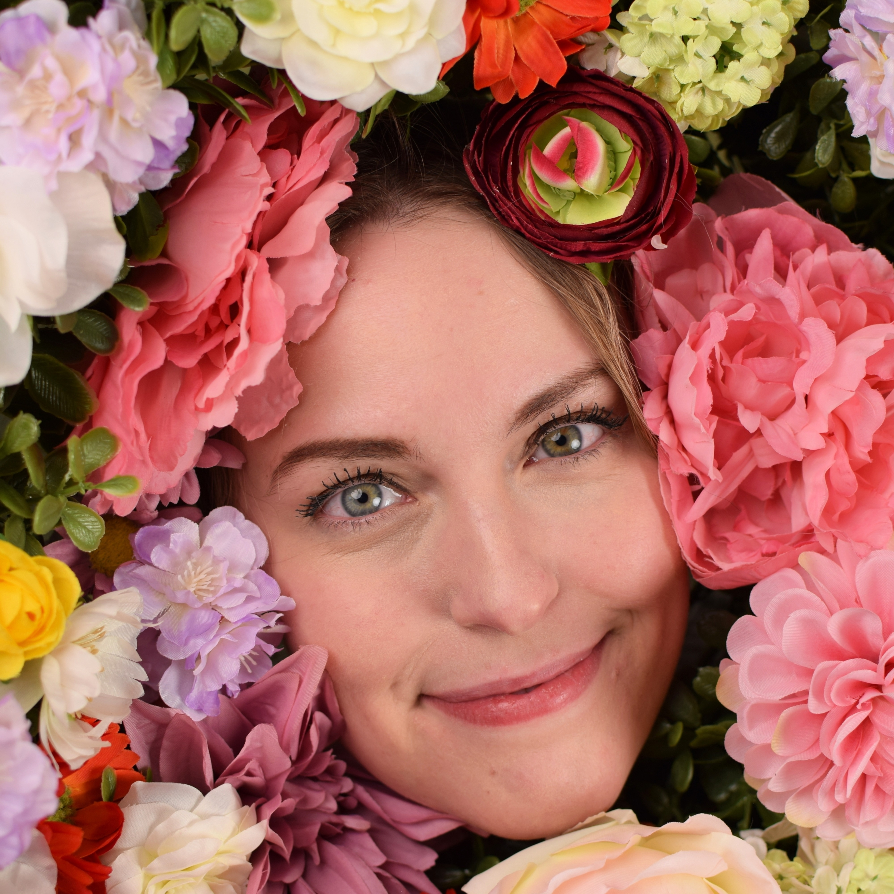
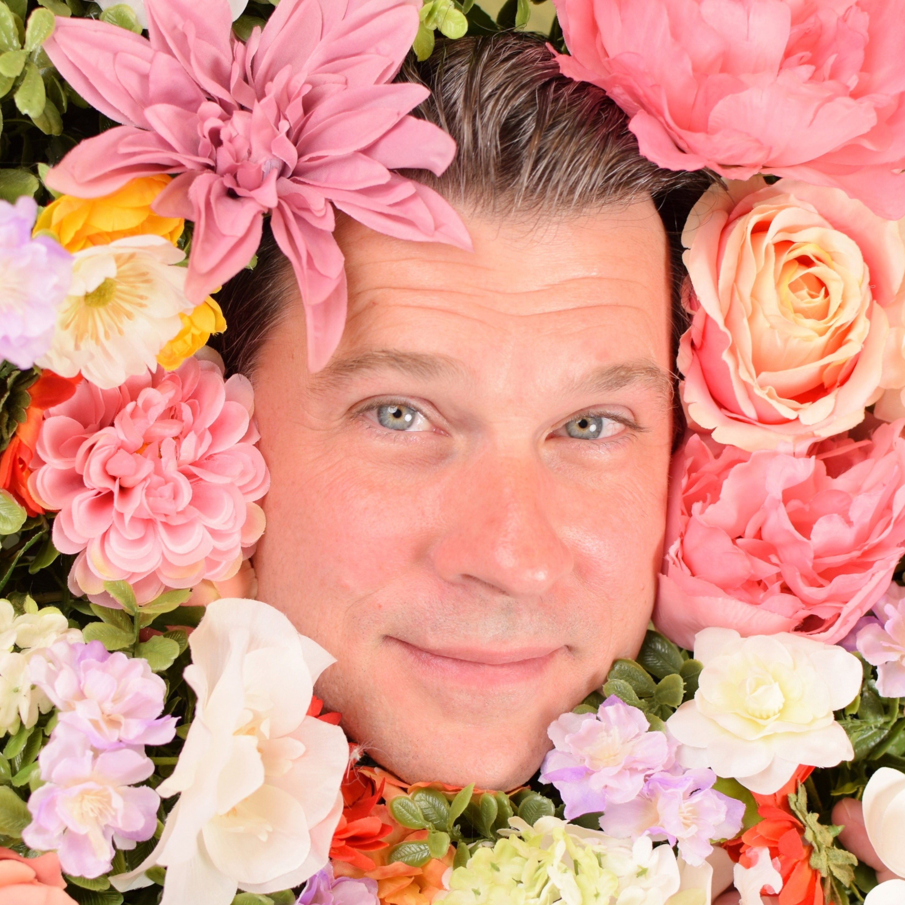
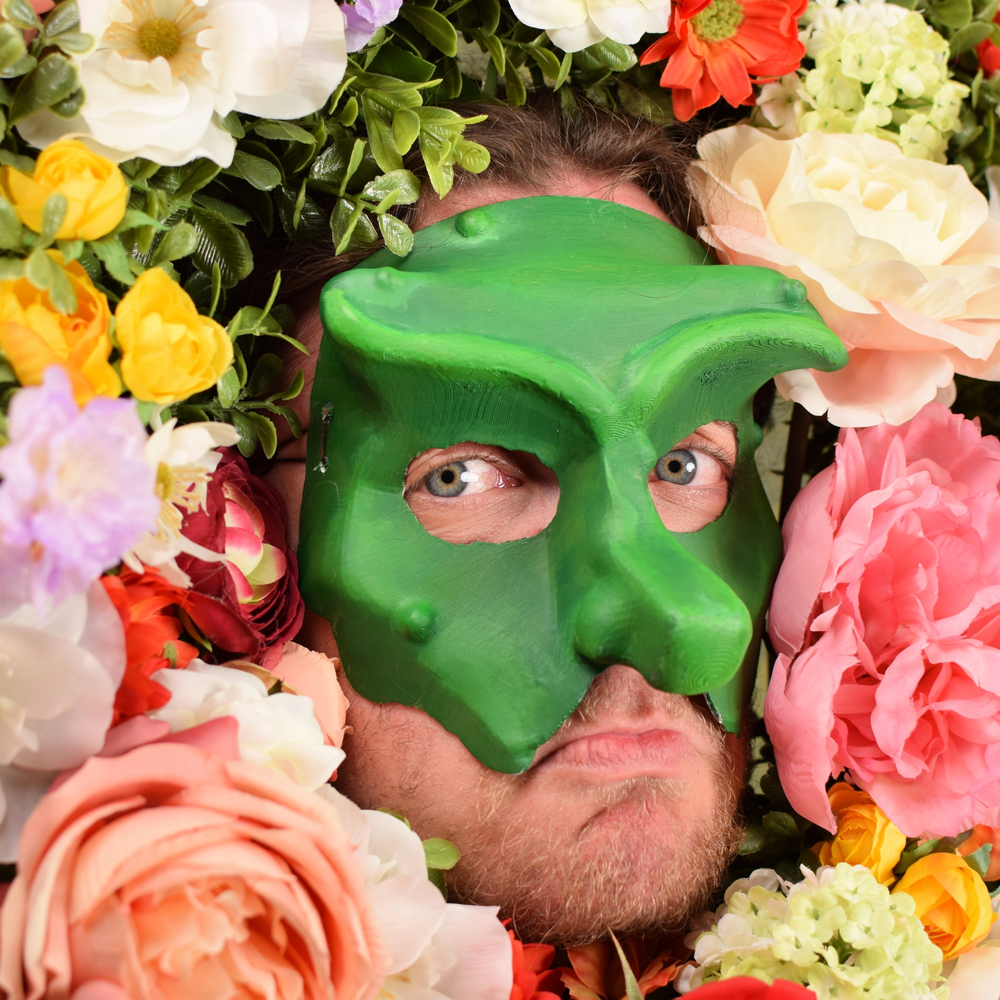
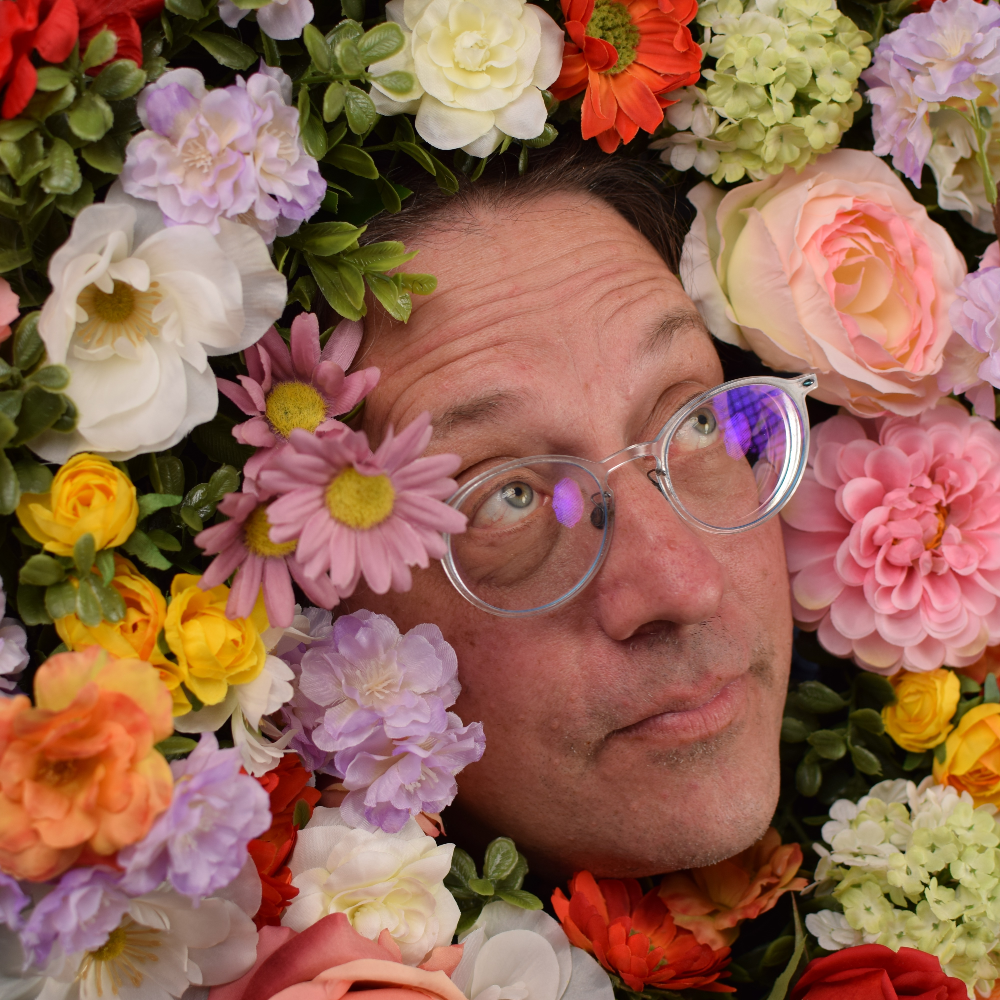
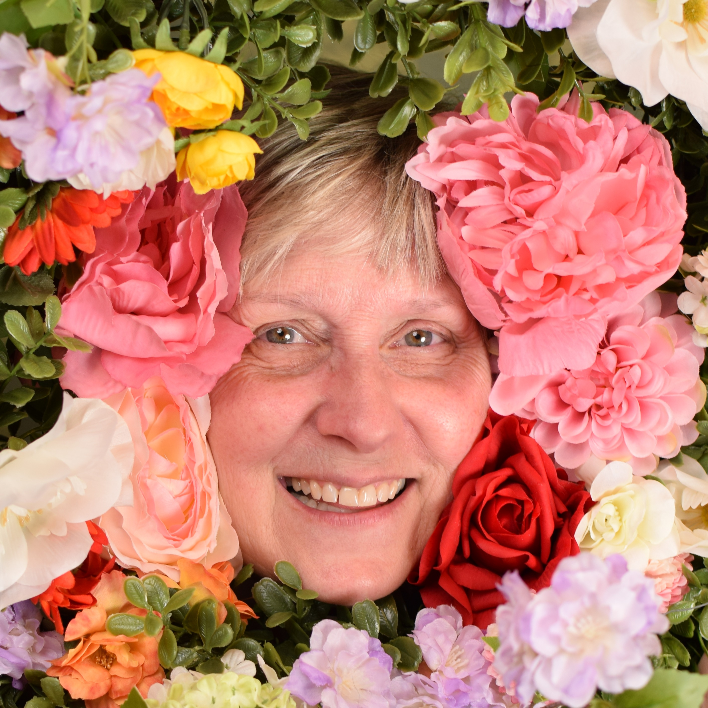

A special Thanks to the following for their support for set pieces, props, costumes and generally being exceptional community members.
West Valley High School
Farris High School
Spokane Falls Community College

Abby Constable (Leonide) is beyond grateful to have been entrusted with the role of Leonide. Between the incredibly talented cast, the dedicated production team, and the powerful direction, she could not have asked for a more fulfilling or beautifully crafted project. Abby is delighted to add The Triumph of Love to her list of performed classical works which include As You Like It (Rosalind), The Taming of the Shrew(Katherine), and Tamer Tamed (Maria), among others. Abby would like to thank her family, Scott Doughty, ICT, and the classic theatre community for making this dream project a reality.
Jaz Vega (Corine) (They/She) is an Actor, Director, and Stage Manager based in Spokane, WA. They’ve recently performed in Be More Chill (Christine) at Stage Left Theater (as well as countless SLT Festivals) and Wild Dust (Marion) with The Upstart Players. She was most recently the Festival Director for Empower at Stage Left and is so happy to be performing again so soon. They would like to thank everyone on the Triumph team for this amazing experience and hopes you enjoy the show!

Steve Lloyd (Hermocrate) (He/Him) Steve is an actor, writer, director who is no stranger to Spokane audiences, with appearances at Spokane Civic Theatre, Stage Left and most recently with Theatre on the Verge, as Ed in Torch Song. A proud SAG-AFTRA member, Steve is also known for his work in television and film. He is thrilled to be given the opportunity to play Hermocrate with Inland Classic Theater at the MAC.
Deborah Marlowe (Leontine): Happy to debut in her first Inland Classical Theatre production and reunite with Director Scott Doughty. Recent credits: Amanda Wingfield /The Glass Menagerie (Spokane Civic), Queen Gertrude/Hamlet (ShakespeareCDA), Julius Caesar/Julius Caesar (Stage Left), Margie Walsh/Good People (Spokane Civic), Julia Leverett/Lend Me a Soprano (Spokane Civic), Emily Penrose/Lifespan of a Fact (Spokane Civic) and Sherie Rosen/Admissions (Stage Left). And, all the Servants in Moliere’s Learned Ladies (Actors Co-op LA)! Here’s to the laughter that Triumph of Love inspires. Kisses to hubby Bob and puppy Max. God gives good!
Ali Aboud (Agis) (He/Him) is a Spokane based actor making his ICT debut with this production. You may have most recently seen him performing at the MAC again in The Most Dangerous Game with Hitchikers Theater. Ali is beyond excited to be working with the phenomenal cast as Agis!
Jeffrey St.George (Harlequin) is no stranger to playing the fool and is thrilled to see you all at Inland Classical Theatre’s second full production. You may have seen him as Hamlet/Hamlet , Touchstone/As You Like It, Benedick/Much Ado About Nothing, Nurse and Friar Laurence/Romeo and Juliet, Macbeth/Macbeth or perhaps Bat Boy in Bat Boy The Musical. When Jeff isn’t performing Shakespeare he’s teaching it online, or at local schools, and when he’s not doing that he’s probably producing some other Classical Work like the one we bring you proudly today.

Max Quintal (Dimas) recent credits include Spokane Civics production of Tennessee William’s The Glass Menagerie as the lead Tom Wingfield as well as a couple of Shakespeare’s works with ShakespeareCDA, such as Don Pedro in Much Ado About Nothing, and Prince Malcolm in Macbeth. He has been acting in productions since early High School such as The Outsiders to Mamma Mia, and even a production of I Hate Hamlet at North Idaho College in the lead as the spectre of John Barrymore. Max has been receiving training for acting for the camera with a local acting teacher Rick Rivera, with the goal in mind to act on film. He also likes to play the drums as a great way to explore music. Lastly Max would just like to thank his friends and family for encouraging him to keep on going.
Bri Castillo (stage manager) is an Stage Manager, Actor, and Writer, based in Spokane, WA. Recently having stage managed Inland Classical’s Mary Stuart, she is grateful for the opportunity to come back for The Triumph of Love. Before that, she appeared in ICT’s Taming of the Shrew and A Tamer Tamed, as well as her play Dead Air was featured in Eastern Washington University’s New Play Festival. Bri would like to thank her family and friends for their continued support and love, and is excited to share with them this wonderful show!

Hazel Bean (set designer) is happy to be joining an ICT production for the first time with The Triumph of Love. Bean is an EWU theatre grad (Heather’s: The Musical, Clybourne Park, The Seagull) and she’s participated in local Spokane theater over the last 14 years. You may have seen her onstage recently in Pam Kingsley’s Minister of Sorrow, directing SFCC’s production of Reefer Madness: The Musical, or working with Spokane Playwrights Lab as a technician, writer, and actor.
Abby Burlingame (costumes) is very grateful to Scott and the team for trusting her with these costumes. It’s not often that one gets to dive into the romance and whimsy of a Rococo painting! She has previously costumed William Shakespeare’s Star Wars and Julius Caesar, both with Bryn Mawr College Shakespeare Performance Troupe. She is also a director, actor, and playwright and currently serves as Artistic Director of Inland Classical Theatre. Many thanks to lovely cast and crew and to her cat Elwha for “helping” with all the sewing.

Jeffrey St.George (Masks) is thrilled to have two Bio’s in one program. One of Jeff’s many theatrical loves is Commedia dell’Arte, which you may recognize as the masks on stage. Jeff has been working with masks for a little over a decade and was tasked with the mask design and ‘coaching’ for this production. Mask’s are a beautiful and strange thing to behold on stage. He hopes you agree.